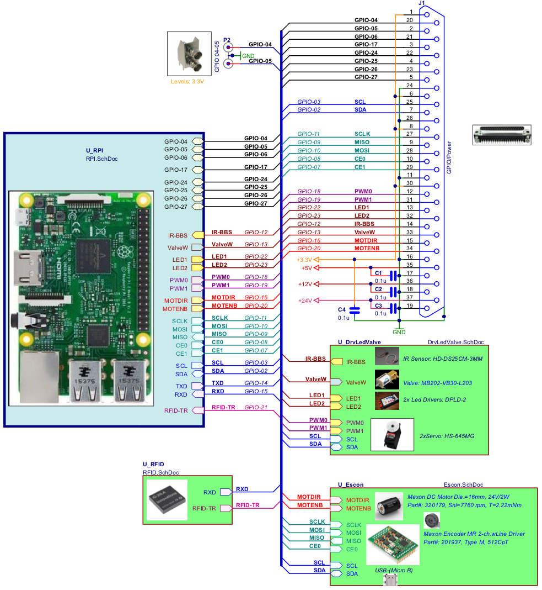
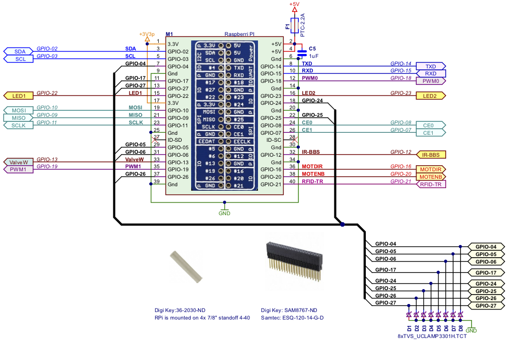
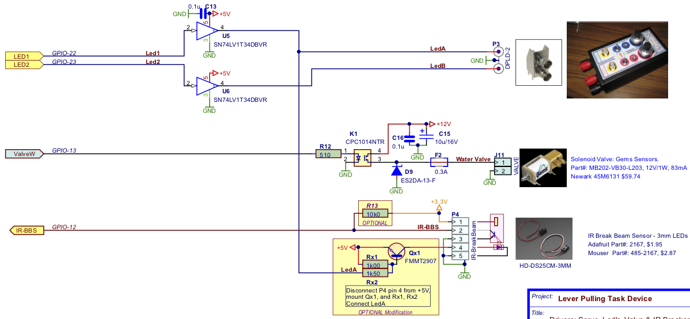

Auto Head Fix Version 1.1
Auto Head Fix (AHF) is a Python program for the Raspberry Pi single board computer provides flexible automated control of brain imaging and behavioural tasks of mice in a home cage environment. It was first described in
High-throughput automated home-cage mesoscopic functional imaging of mouse cortex. Murphy TH, Boyd JD, Bolaños F, Vanni MP, Silasi G, Haupt D, LeDue J. Nat Commun. 2016 Jun 13;7:11611. This version of the code provides more flexibility for adding Stimulator classes to control different behavioral tasks, provides code for accessing more harware, and defines new Stimulator classes that take advantage of these added capabilities.
AHF runs on a Pi 2 Model B, or a Pi 3 Model B/B+ with a standard install of the Raspbian operating system, which is based on Debian Linux. AHF runs under Python 3, which is standard with Rasbian. Python 2 is not supported.
AHF contains many modules, most defining classes that control a particular hardware device to add specific functionality. Flexibility is built in by: 1) making loading of some modules optional; 2) describing functionality (e.g., head fixer, stimulator) in abstract base classes, subclasses of which can use different hardware in their implementation; 3) choosing which modules/subclasses to load based on configuration files loaded at startup. The various AHF modules are decribed in more detail below.
Overview
Program Flow
At launch, AHF loads hardware information (which GPIO pins are used for which tasks, e.g.) from a configuration file in the same directory in which the program is run, or if the file is not found, it querries the user for settings such as hardware pins and then writes a new file. AHF then loads an experiment settings file (specifying task timing, which behavioral task to perform, and settings for that task) which may be supplied as a command line argumeent when launching the program, or the user may be asked to choose one. If no setttings file is found, the user is asked for settings , and a new file is created. AHF initializes the hardware according to the settings in these files, and creates objects from the various classes defined in the loaded AHF modules. Some of these objects will do their own hardware initialization. AHF then loads current stats, if available, for the mice, and creates folders for storage of brain imaging movies and other data. Each day, two text file are created, one used to log all program activity (entries, exits, head fix sessions, rewards given, behavioral task performance, names of brain imaging movies), and one used to update stats of the activity/performance for each mouse.
After initialization, AHF repeatedly waits for an RFID tag to be read, indicating a mouse is within the experimental chamber. A water reward can be given upon entry. While the mouse is in the chamber, the program repeatedly waits for the contact check indicating the mouse has approached the head fixing apparatus which is then activated. Upon head fixing, the picamera starts recording a movie of brain activity and the LED for brain illumination is activated. The run method of the Stimulator object controlling the behavioural task is then called. The Stimulator controls any behavioral task, gives water rewards as appropriate, writes results to the log file, and updates the stats file. When the run method finishes, the LED for brain illumination is turned off, and the picamera recording is stopped. The mouse is released from head fixation, but may opt to do additional head fixes before leaving the chamber.
Typing ctrl-c stops the program waiting for chamber entries and presents the user with a menu
Hardware Connections
The Raspberry Pi has a 40 pin header providing GPIO, UART, I2C, SPI and PWM protocols to interact with a wide range of hardware, plus a custom connector for a picamera (a cell phone-quality camera for recording still images and movies). These features, plus small size and low cost, make the Pi ideal for the Auto Head Fix application. A cage of 4-8 mice has a dedicated Raspberry Pi that controls an RFID reader for monitoring implanted ID tags, a solenoid valve for giving water rewards, electrical contacts or IR beam breaker for checking animal appoach, solenoid-driven pistons or a servo motor for steadying head position, an LED for illumnating the brain for fluorescent imaging, and a picamera for collecting brain imaging data. Different behavioral tasks, defined in Stumulator classes, may define additional harware requirements, such as LEDs, piezo buzzers, or vibration motors for sensory stimulation, or a lick detector based on a capacitive touch sensor attached to the water reward spout. The focus on hardware devices in this document is on their connections with the GPIO header and their configuration and control in software; see publications cited above for more detailed information on the hardware iteself.
Most of the pins on the 40 pin header can be used for General Purpose Input/Output (GPIO). The RPi.GPIO library, available in the standard Raspbian install, is used to configure GPIO pins for output or input, set output pins to high or low logic levels, and read logic levels of input pins. As a general rule, GPIO pin numbers are not specified in the AHF python code files. Instead, pin numbers are saved in JSON-styled configuration files which can be loaded, edited, and saved from within the program.
Some of the pins on the header can be configured for special functions in addition to GPIO. Pins 14 and 15 are the transmit and receive pins for the built in UART serial port. The RFID tag reader may use the built in serial port. Pins 2 and 3 are the data and clock pins for the I2C bus. The lick detector and one of the servo motor-based head fixers use this bus. The AHF modules controlling them use the Adafruit Python GPIO library to read and write to the I2C bus. Note that multiple devices can be connected to the I2C bus at once, because each device is identified by a hardware address. Pins 18 and 19 support Pulse Width Modulation (PWM) output from the pi's PWM peripheral
RFID Tag Reader
An ID-Innovations RFID tag reader controlled with the RFIDTagReader module is used to read subcutaneously implanted 125kHz RFID tags. Use the Tag-In-Range pin as a GPIO interrupt on Raspberry Pi.
Rewarder
A sinlge GPIO pin configured for output is used to open and close a valve delivering water. The valve is run by a solenoid requiring 12V, so the 3.3V GPIO output must gate an external 12V supply, either by being applied to the base of a transistor with 12V at the collector, or with an optoisolator. The class AHF_Rewarder is inited with the number of the GPIO pin used to control the solenoid and a default opening duration. A dictionary is used to store different opening durations with user-defined names. to be used if
a non-existent key is later requested, and .
"""
A class to use a solenoid to deliver water rewards of various sizes
.
The Rewarder class
Contact Checker
A sinlge GPIO pin configured for input.
There is only one hardware configuration file, and it is named AHF_config.jsn.
Experiment settings files are named starting with 'AHF_Settings_' and ending with '.jsn'.
Hardware Tester


